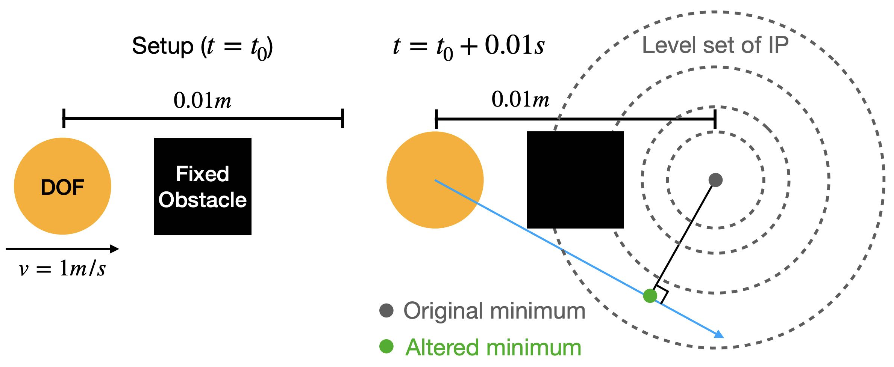
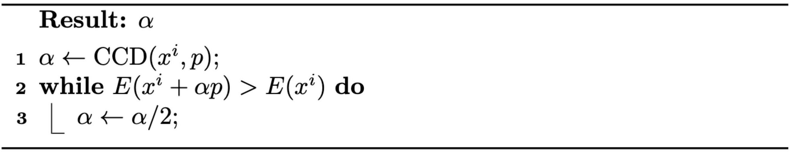
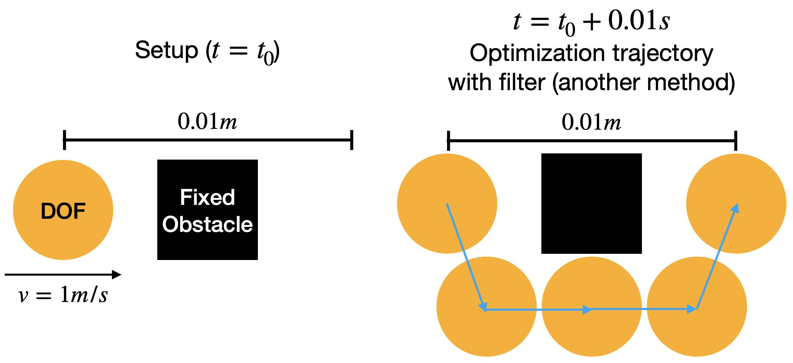

The most straightforward way of defining the motion trajectory between \(x^n\) and \(x^{n+1}\) at time \(t^n\) and \(t^{n+1}\) respectively would be the high-dimensional line segment connecting these two configurations. However, although enforcing non-negative signed distances on this trajectory could avoid the tunneling issue in Example 8.1.1, this strategy could potentially result in unrealistic behaviors as it alters the local optimum of the minimization problem (Equation (7.2.1)) in a nonphysical way (Figure 8.2.1).

Figure 8.2.1. For the setup in the tunneling example, enforcing non-negative signed distance along the motion trajectory approximated by the line segment between xn and xn+1 results in a nonphysical simulation result.
A more rigorous definition of the motion trajectory between \(x^n\) and \(x^{n+1}\) could be
{argxmin(21∥x−(xn+hvn)∥M2+h2∑P(x))h∈[0,tn+1−tn]}.
However, evaluating the configurations on this trajectory requires solving extra optimization problems, which could significantly complicate the time integration.
Instead, IPC takes the optimization path as an approximation to the motion trajectory. Specifically, for the time step solving from \(x^n\) to \(x^{n+1}\), if the optimization took \(l\) iterations, and each iteration we get iterate \(x^i\) after line search, the optimization path is simply the high-dimensional polyline
{(1−β)xi+βxi+1∣β∈[0,1],i=0,1,2,...,l}.
Now the time integration problem in time step \(n\) becomes finding such optimization path \(x^0, x^1, ..., x^l\) where \(x^l\) locally minimizes the Incremental Potential (Equation (7.2.2)) subject to
djk((1−β)xi+βxi+1)>0∀nodej,obstaclek,β∈[0,1],andi=0,1,2,...,l.
This enables enforcing the non-negative distance constraints per optimization iteration on the line segment between \(x^i\) and \(x^{i+1}\), which will not alter the local optimum of the time integration problem, and can be handled efficiently.
Recall from Algorithm 3.2.1 that the line search scheme updates the iterate as \(x^{i+1} \leftarrow x^i + \alpha p\), which means \(x^{i+1} - x^{i} = \alpha p\). Therefore, given an interpenetration-free \(x^i\), to ensure all the configurations on the line segment between \(x^i\) and \(x^{i+1}\) are interpenetration-free, we just need to find such \(\alpha\) that makes sure
djk(xi+βp)≥0∀nodej,obstaclek,andβ∈[0,α].
Based on the intuition that a sufficiently small \(\alpha\) could definitely make this happen, we can simply calculate an upper bound of such \(\alpha\) in every iteration, and make sure the backtracking line search results in a step size smaller than this upper bound. This upper bound can be conveniently calculated with continuous collision detection (CCD).
Definition 8.2.1 (Continuous Collision Detection (CCD)).
For a distance function \(d_{jk}(x + \alpha p)\) defined with the initial interpenetration-free configuration of the solids and obstacles \(x\), their intended displacement \(p\), and the step size \(\alpha\), CCD calculates the step size \(\alpha^C_{jk}\) given \(x\) and \(p\) such that
djk(x+αp)>0∀α∈[0,αjkC).(8.2.1)
Note that the problem definition implicitly requires \(d_{jk}(x) > 0\). Under this setting, if we denote \(d^a_{jk}(\alpha) = d_{jk}(x + \alpha p)\), \(\alpha^C_{jk}\) is simply the smallest positive real root of \(d^a_{jk}(\alpha)\) (see Figure 8.2.2 for an example), or \(\alpha^C_{jk} = \infty\) if \(d^a_{jk}(\alpha)\) does not have any positive real roots. There are many methods to obtain the exact or a conservative estimate of \(\alpha^C_{jk}\), we will see a specific example in the case study of this lecture. After computing \(\alpha^C_{jk}\) for all nodes \(j\) and obstacle \(k\), a step size upper bound \(\alpha^C\) for the line search could then be obtained as
αC=min(1,j,kminαjkC)
Figure 8.2.2. An illustration of CCD with a solid particle at (0,0) hitting a fixed vertical plane at x=0.3. With the intended displacement p=(0.5,0), we obtain αC=0.6.
Now, we can introduce our filter line search method (Algorithm 8.2.1), specifically designed to enforce non-interpenetration constraints throughout the entire approximated motion trajectory. This strategic enforcement is key in preventing tunneling issues that commonly occur in simulations with insufficient constraint handling.
This new scheme differs from the traditional backtracking line search method in a critical aspect: it initializes the step size. Instead of starting with a step size of \(1\), the filter line search method begins with \(\alpha^C\). This modification is subtle yet significant.
Algorithm 8.2.1 (Filter Backtracking Line Search).

Remark 8.2.1 (Algorithm Dependency Issue).
Using the optimization path to approximate the motion trajectory is still not perfect as it is algorithm dependent. Other than the projected Newton (PN) method, there could be an algorithm that walks around an obstacle and ended up with a configuration on the other side, still providing a tunneling solution (Figure 8.2.3).
Even with projected Newton, although in practice it always generates straightforward and physically plausible trajectories, there is no theoretical guarantee that it will never encounter tunneling issues.
An intuition is that the search direction in every PN iteration always significantly decreases the Incremental Potential (IP), and so it is unlikely to walk around any contacts which often results in iterations that do not sufficiently decrease the IP.
In fact, this kind of issue also happens in elastodynamics simulation without contact. Elasticity energy itself is also nonconvex, which can result in multiple local optima for the IP. The key to obtaining physical behaviors is to locally minimize IP, in other words, finding the nearby local minimum as the solution.

Figure 8.2.3. For the setup in the tunneling example, even with the filter line search scheme, if an optimization method other than projected Newton is applied, it could still lead to the tunneling issue.